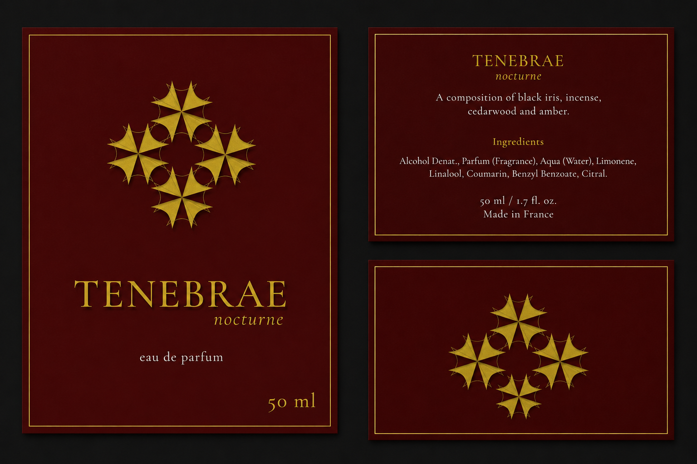

DESIGN PRACTICE
Tenebrae
A dark and atmospheric fragrance branding concept exploring identity, packaging, and visual direction.

DESIGN PRACTICE
A dark and atmospheric fragrance branding concept exploring identity, packaging, and visual direction.
Tenebrae is a fictional fragrance brand created as a visual branding exercise. The concept explores a darker, more sophisticated aesthetic inspired by mystery, contrast, and timeless luxury.
The visual identity uses restrained typography, dark tones, and minimal packaging details to create a refined and atmospheric character. The goal was to make the product feel distinctive without relying on excessive decoration.

This exercise allowed me to explore how typography, packaging, and visual atmosphere can work together to communicate a strong brand personality.